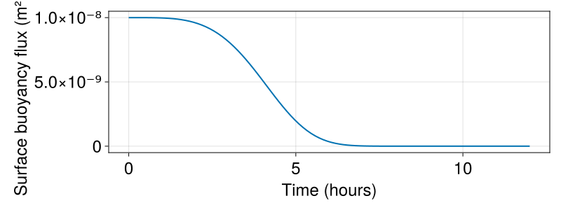
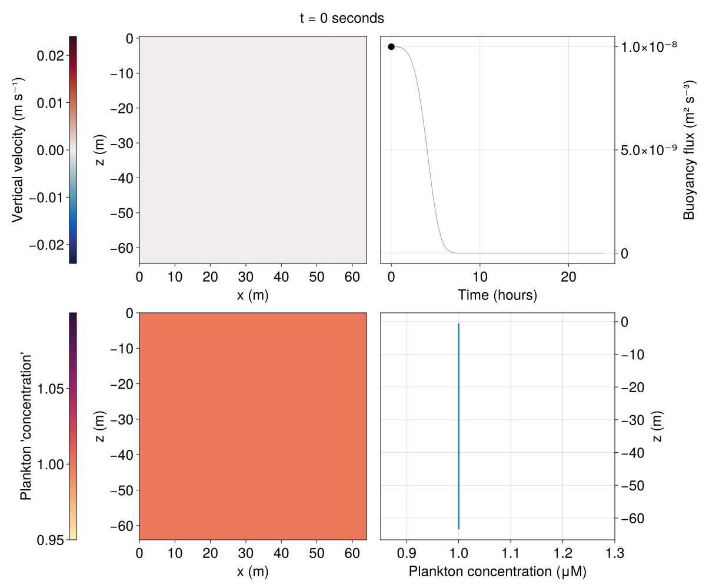

Plankton mixing and blooming
In this example, we simulate the mixing of phytoplankton by convection that decreases in time and eventually shuts off, thereby precipitating a phytoplankton bloom. A similar scenario was simulated by Taylor and Ferrari (2011), providing evidence that the "critical turbulence hypothesis" explains the explosive bloom of oceanic phytoplankton observed in spring.
The phytoplankton in our model are advected, diffuse, grow, and die according to
\[∂_t P + \boldsymbol{v \cdot \nabla} P - κ ∇²P = [μ₀ \exp(z / λ) - m] \, P \, ,\]
where $\boldsymbol{v}$ is the turbulent velocity field, $κ$ is an isotropic diffusivity, $μ₀$ is the phytoplankton growth rate at the surface, $λ$ is the scale over which sunlight attenuates away from the surface, and $m$ is the mortality rate of phytoplankton due to viruses and grazing by zooplankton. We use Oceananigans' Forcing abstraction to implement the phytoplankton dynamics described by the right side of the phytoplankton equation above.
This example demonstrates
- How to use a user-defined forcing function to simulate the dynamics of phytoplankton growth in sunlight and grazing by zooplankton.
- How to set time-dependent boundary conditions.
- How to use the
TimeStepWizardto adapt the simulation time-step. - How to use
Averageto diagnose spatial averages of model fields.
Install dependencies
First let's make sure we have all required packages installed.
using Pkg
pkg"add Oceananigans, CairoMakie"The grid
We use a two-dimensional grid with 64² points, 3² halo points for high-order advection, 1 m grid spacing, and a Flat y-direction:
using Oceananigans
using Oceananigans.Units: minutes, hour, hours, day
grid = RectilinearGrid(size=(64, 64), extent=(64, 64), halo=(3, 3), topology=(Periodic, Flat, Bounded))64×1×64 RectilinearGrid{Float64, Periodic, Flat, Bounded} on CPU with 3×0×3 halo
├── Periodic x ∈ [0.0, 64.0) regularly spaced with Δx=1.0
├── Flat y
└── Bounded z ∈ [-64.0, 0.0] regularly spaced with Δz=1.0Boundary conditions
We impose a surface buoyancy flux that's initially constant and then decays to zero,
buoyancy_flux(x, t, params) = params.initial_buoyancy_flux * exp(-t^4 / (24 * params.shut_off_time^4))
buoyancy_flux_parameters = (initial_buoyancy_flux = 1e-8, # m² s⁻³
shut_off_time = 2hours)
buoyancy_flux_bc = FluxBoundaryCondition(buoyancy_flux, parameters = buoyancy_flux_parameters)FluxBoundaryCondition: ContinuousBoundaryFunction buoyancy_flux at (Nothing, Nothing, Nothing)The fourth power in the argument of exp above helps keep the buoyancy flux relatively constant during the first phase of the simulation. We produce a plot of this time-dependent buoyancy flux for the visually-oriented,
using CairoMakie
set_theme!(Theme(fontsize = 24, linewidth=2))
times = range(0, 12hours, length=100)
fig = Figure(size = (800, 300))
ax = Axis(fig[1, 1]; xlabel = "Time (hours)", ylabel = "Surface buoyancy flux (m² s⁻³)")
flux_time_series = [buoyancy_flux(0, t, buoyancy_flux_parameters) for t in times]
lines!(ax, times ./ hour, flux_time_series)
fig
The buoyancy flux effectively shuts off after 6 hours of simulation time.
Fluxes are defined by the direction a quantity is carried: positive velocities produce positive fluxes, while negative velocities produce negative fluxes. Diffusive fluxes are defined with the same convention. A positive flux at the top boundary transports buoyancy upwards, out of the domain. This means that a positive flux of buoyancy at the top boundary reduces the buoyancy of near-surface fluid, causing convection.
The initial condition and bottom boundary condition impose the constant buoyancy gradient
N² = 1e-4 # s⁻²
buoyancy_gradient_bc = GradientBoundaryCondition(N²)GradientBoundaryCondition: 0.0001In summary, the buoyancy boundary conditions impose a destabilizing flux at the top and a stable buoyancy gradient at the bottom:
buoyancy_bcs = FieldBoundaryConditions(top = buoyancy_flux_bc, bottom = buoyancy_gradient_bc)Oceananigans.FieldBoundaryConditions, with boundary conditions
├── west: DefaultBoundaryCondition (FluxBoundaryCondition: Nothing)
├── east: DefaultBoundaryCondition (FluxBoundaryCondition: Nothing)
├── south: DefaultBoundaryCondition (FluxBoundaryCondition: Nothing)
├── north: DefaultBoundaryCondition (FluxBoundaryCondition: Nothing)
├── bottom: GradientBoundaryCondition: 0.0001
├── top: FluxBoundaryCondition: ContinuousBoundaryFunction buoyancy_flux at (Nothing, Nothing, Nothing)
└── immersed: DefaultBoundaryCondition (FluxBoundaryCondition: Nothing)Phytoplankton dynamics: light-dependent growth and uniform mortality
We use a simple model for the growth of phytoplankton in sunlight and decay due to viruses and grazing by zooplankton,
growing_and_grazing(x, z, t, P, params) = (params.μ₀ * exp(z / params.λ) - params.m) * Pwith parameters
plankton_dynamics_parameters = (μ₀ = 1/day, # surface growth rate
λ = 5, # sunlight attenuation length scale (m)
m = 0.1/day) # mortality rate due to virus and zooplankton grazing(μ₀ = 1.1574074074074073e-5, λ = 5, m = 1.1574074074074074e-6)We tell Forcing that our plankton model depends on the plankton concentration P and the chosen parameters,
plankton_dynamics = Forcing(growing_and_grazing, field_dependencies = :P,
parameters = plankton_dynamics_parameters)ContinuousForcing{@NamedTuple{μ₀::Float64, λ::Int64, m::Float64}}
├── func: growing_and_grazing (generic function with 1 method)
├── parameters: (μ₀ = 1.1574074074074073e-5, λ = 5, m = 1.1574074074074074e-6)
└── field dependencies: (:P,)The model
The name "P" for phytoplankton is specified in the constructor for NonhydrostaticModel. We additionally specify a fifth-order advection scheme, third-order Runge-Kutta time-stepping, isotropic viscosity and diffusivities, and Coriolis forces appropriate for planktonic convection at mid-latitudes on Earth.
model = NonhydrostaticModel(; grid,
advection = UpwindBiasedFifthOrder(),
timestepper = :RungeKutta3,
closure = ScalarDiffusivity(ν=1e-4, κ=1e-4),
coriolis = FPlane(f=1e-4),
tracers = (:b, :P), # P for Plankton
buoyancy = BuoyancyTracer(),
forcing = (; P=plankton_dynamics),
boundary_conditions = (; b=buoyancy_bcs))NonhydrostaticModel{CPU, RectilinearGrid}(time = 0 seconds, iteration = 0)
├── grid: 64×1×64 RectilinearGrid{Float64, Periodic, Flat, Bounded} on CPU with 3×0×3 halo
├── timestepper: RungeKutta3TimeStepper
├── advection scheme: FluxFormAdvection{3, Float64, UpwindBiased{3, Float64, Nothing, Nothing, Nothing, UpwindBiased{2, Float64, Nothing, Nothing, Nothing, UpwindBiased{1, Float64, Nothing, Nothing, Nothing, Nothing, Centered{1, Float64, Nothing, Nothing, Nothing, Nothing}}, Centered{1, Float64, Nothing, Nothing, Nothing, Nothing}}, Centered{2, Float64, Nothing, Nothing, Nothing, Centered{1, Float64, Nothing, Nothing, Nothing, Nothing}}}, UpwindBiased{1, Float64, Nothing, Nothing, Nothing, Nothing, Centered{1, Float64, Nothing, Nothing, Nothing, Nothing}}, UpwindBiased{3, Float64, Nothing, Nothing, Nothing, UpwindBiased{2, Float64, Nothing, Nothing, Nothing, UpwindBiased{1, Float64, Nothing, Nothing, Nothing, Nothing, Centered{1, Float64, Nothing, Nothing, Nothing, Nothing}}, Centered{1, Float64, Nothing, Nothing, Nothing, Nothing}}, Centered{2, Float64, Nothing, Nothing, Nothing, Centered{1, Float64, Nothing, Nothing, Nothing, Nothing}}}}
├── tracers: (b, P)
├── closure: ScalarDiffusivity{ExplicitTimeDiscretization}(ν=0.0001, κ=(b=0.0001, P=0.0001))
├── buoyancy: BuoyancyTracer with ĝ = NegativeZDirection()
└── coriolis: FPlane{Float64}(f=0.0001)Initial condition
We set the initial phytoplankton at $P = 1 \, \rm{μM}$. For buoyancy, we use a stratification that's mixed near the surface and linearly stratified below, superposed with surface-concentrated random noise.
mixed_layer_depth = 32 # m
stratification(z) = z < -mixed_layer_depth ? N² * z : - N² * mixed_layer_depth
noise(z) = 1e-4 * N² * grid.Lz * randn() * exp(z / 4)
initial_buoyancy(x, z) = stratification(z) + noise(z)
set!(model, b=initial_buoyancy, P=1)Simulation with adaptive time-stepping, logging, and output
We build a simulation
simulation = Simulation(model, Δt=2minutes, stop_time=24hours)Simulation of NonhydrostaticModel{CPU, RectilinearGrid}(time = 0 seconds, iteration = 0)
├── Next time step: 2 minutes
├── Elapsed wall time: 0 seconds
├── Wall time per iteration: NaN days
├── Stop time: 1 day
├── Stop iteration : Inf
├── Wall time limit: Inf
├── Callbacks: OrderedDict with 4 entries:
│ ├── stop_time_exceeded => Callback of stop_time_exceeded on IterationInterval(1)
│ ├── stop_iteration_exceeded => Callback of stop_iteration_exceeded on IterationInterval(1)
│ ├── wall_time_limit_exceeded => Callback of wall_time_limit_exceeded on IterationInterval(1)
│ └── nan_checker => Callback of NaNChecker for u on IterationInterval(100)
├── Output writers: OrderedDict with no entries
└── Diagnostics: OrderedDict with no entrieswith a TimeStepWizard that limits the time-step to 2 minutes, and adapts the time-step such that CFL (Courant-Freidrichs-Lewy) number hovers around 1.0,
conjure_time_step_wizard!(simulation, cfl=1.0, max_Δt=2minutes)We also add a callback that prints the progress of the simulation,
using Printf
progress(sim) = @printf("Iteration: %d, time: %s, Δt: %s\n",
iteration(sim), prettytime(sim), prettytime(sim.Δt))
add_callback!(simulation, progress, IterationInterval(100))and a basic JLD2OutputWriter that writes velocities and both the two-dimensional and horizontally-averaged plankton concentration,
outputs = (w = model.velocities.w,
P = model.tracers.P,
avg_P = Average(model.tracers.P, dims=(1, 2)))
simulation.output_writers[:simple_output] =
JLD2OutputWriter(model, outputs,
schedule = TimeInterval(20minutes),
filename = "convecting_plankton.jld2",
overwrite_existing = true)JLD2OutputWriter scheduled on TimeInterval(20 minutes):
├── filepath: ./convecting_plankton.jld2
├── 3 outputs: (w, P, avg_P)
├── array type: Array{Float64}
├── including: [:grid, :coriolis, :buoyancy, :closure]
├── file_splitting: NoFileSplitting
└── file size: 32.7 KiBBecause each output writer is associated with a single output schedule, it often makes sense to use different output writers for different types of output. For example, smaller outputs that consume less disk space may be written more frequently without threatening the capacity of your hard drive. An arbitrary number of output writers may be added to simulation.output_writers.
The simulation is set up. Let there be plankton:
run!(simulation)[ Info: Initializing simulation...
Iteration: 0, time: 0 seconds, Δt: 2 minutes
[ Info: ... simulation initialization complete (10.320 seconds)
[ Info: Executing initial time step...
[ Info: ... initial time step complete (3.403 seconds).
Iteration: 100, time: 2.308 hours, Δt: 41.014 seconds
Iteration: 200, time: 3.498 hours, Δt: 30.722 seconds
Iteration: 300, time: 4.421 hours, Δt: 27.895 seconds
Iteration: 400, time: 5.395 hours, Δt: 47.984 seconds
Iteration: 500, time: 6.575 hours, Δt: 33.944 seconds
Iteration: 600, time: 7.836 hours, Δt: 53.654 seconds
Iteration: 700, time: 9.508 hours, Δt: 1.098 minutes
Iteration: 800, time: 11.328 hours, Δt: 1.194 minutes
Iteration: 900, time: 13.232 hours, Δt: 1.503 minutes
Iteration: 1000, time: 15.383 hours, Δt: 1.531 minutes
Iteration: 1100, time: 18.263 hours, Δt: 2 minutes
Iteration: 1200, time: 21.567 hours, Δt: 2 minutes
[ Info: Simulation is stopping after running for 41.752 seconds.
[ Info: Simulation time 1 day equals or exceeds stop time 1 day.
Notice how the time-step is reduced at early times, when turbulence is strong, and increases again towards the end of the simulation when turbulence fades.
Visualizing the solution
We'd like to a make a plankton movie. First we load the output file and build a time-series of the buoyancy flux,
filepath = simulation.output_writers[:simple_output].filepath
w_timeseries = FieldTimeSeries(filepath, "w")
P_timeseries = FieldTimeSeries(filepath, "P")
avg_P_timeseries = FieldTimeSeries(filepath, "avg_P")
times = w_timeseries.times
buoyancy_flux_time_series = [buoyancy_flux(0, t, buoyancy_flux_parameters) for t in times]
nothing # hideNow, we animate plankton mixing and blooming,
using CairoMakie
@info "Making a movie about plankton..."
n = Observable(1)
title = @lift @sprintf("t = %s", prettytime(times[$n]))
wn = @lift w_timeseries[$n]
Pn = @lift P_timeseries[$n]
avg_Pn = @lift avg_P_timeseries[$n]
w_lim = maximum(abs, interior(w_timeseries))
w_lims = (-w_lim, w_lim)
P_lims = (0.95, 1.1)
fig = Figure(size = (1200, 1000))
ax_w = Axis(fig[2, 2]; xlabel = "x (m)", ylabel = "z (m)", aspect = 1)
ax_P = Axis(fig[3, 2]; xlabel = "x (m)", ylabel = "z (m)", aspect = 1)
ax_b = Axis(fig[2, 3]; xlabel = "Time (hours)", ylabel = "Buoyancy flux (m² s⁻³)", yaxisposition = :right)
ax_avg_P = Axis(fig[3, 3]; xlabel = "Plankton concentration (μM)", ylabel = "z (m)", yaxisposition = :right)
xlims!(ax_avg_P, 0.85, 1.3)
fig[1, 1:3] = Label(fig, title, tellwidth=false)
hm_w = heatmap!(ax_w, wn; colormap = :balance, colorrange = w_lims)
Colorbar(fig[2, 1], hm_w; label = "Vertical velocity (m s⁻¹)", flipaxis = false)
hm_P = heatmap!(ax_P, Pn; colormap = :matter, colorrange = P_lims)
Colorbar(fig[3, 1], hm_P; label = "Plankton 'concentration'", flipaxis = false)
lines!(ax_b, times ./ hour, buoyancy_flux_time_series; linewidth = 1, color = :black, alpha = 0.4)
b_flux_point = @lift Point2(times[$n] / hour, buoyancy_flux_time_series[$n])
scatter!(ax_b, b_flux_point; marker = :circle, markersize = 16, color = :black)
lines!(ax_avg_P, avg_Pn)
fig
And, finally, we record a movie.
frames = 1:length(times)
@info "Making an animation of convecting plankton..."
record(fig, "convecting_plankton.mp4", frames, framerate=8) do i
n[] = i
end[ Info: Making an animation of convecting plankton...
This page was generated using Literate.jl.